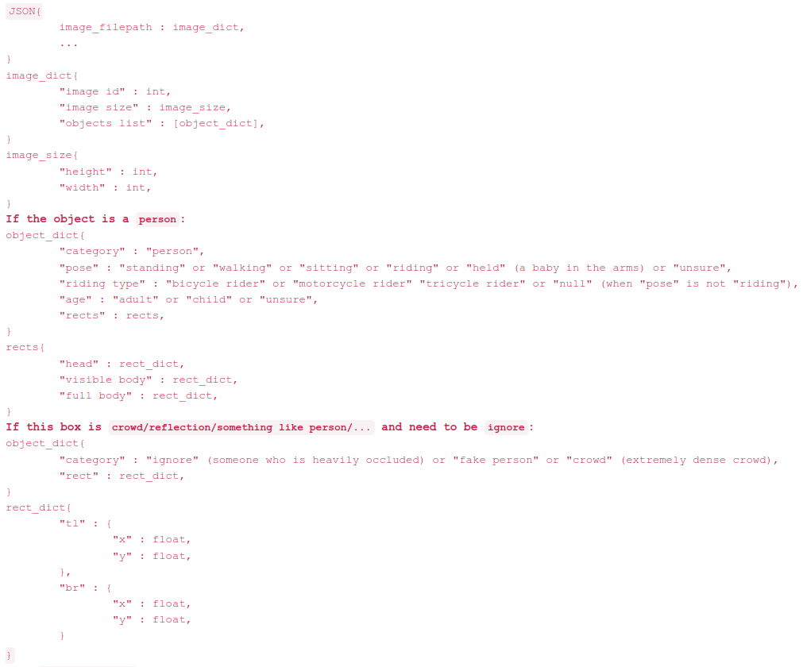
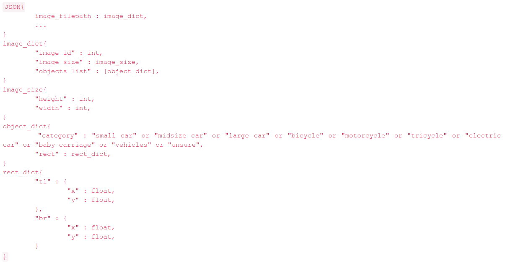
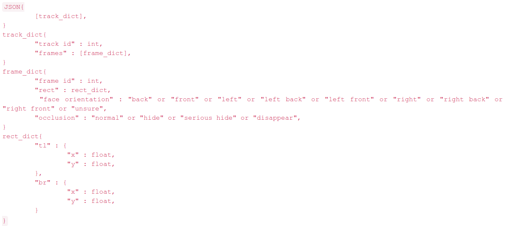

PANDA is the first gigapixel-level human-centric video dataset, for large-scale, long-term, and multi-object visual analysis. The videos in PANDA were captured by a gigapixel camera and cover real-world large-scale scenes with both wide field-of-view (~1km^2 area) and high resolution details (~gigapixel-level/frame). The scenes may contain 4k head counts with over 100× scale variation. PANDA provides enriched and hierarchical ground-truth annotations, including 15,974.6k bounding boxes, 111.8k fine-grained attribute labels, 12.7k trajectories, 2.2k groups and 2.9k interactions.
Depending on the data type, the PANDA dataset is split into 2 sub-sets: PANDA-Image and PANDA-Video. Among them, PANDA-Image is composed of 555 static giga-pixel images (390 for training, 165 for testing), and PANDA-Video is composed of 15 giga-pixel video sequences (10 videos for training, 5 videos for testing).
Since existing video compression formats such as H264 cannot handle the extremely high resolution of the PANDA dataset, the videos in panda-video are split into image frames (.jpg format ) for storage. Moreever, from the point of view of data storage and download, in order to make the total volume of data not too large, we take time sampling on the videos and the frame rate of the videos is 2 FPS.
For more information please read PANDA: A Gigapixel-level Human-centric Video Dataset.
The two files human_bbox_train.json and vehicle_bbox_train.json respectively contain the annotations of the pedestrians and vehicles in the images for training set. human_bbox_test.json and vehicle_bbox_test.json only contain image_filepath, image id and image size for testing set. Please note that for the results on the test set to submit, the image id should be the same as in the annotation file.
The annotation structure for people is as follows:
The annotation structure for vehicles is as follows:
The annotation files for each video sequence in PANDA-Video include two: tracks.json and seqinfo.json respectively contain the pedestrian trajectory annotation and the basic information of the video sequence. The annotation file for each video sequence is stored in a folder named after the scene name.
The annotation structure is as follows:
In order to download the PANDA dataset, you must mail zhang-xy18@mails.tsinghua.edu.cn and use the following template:
No offical models have been provided for this dataset.
No official benchmarks have been provided for this dataset.
This dataset is associated with the ECCV 2020 challenge.
Dataset licensed under the CC-BY-NC-SA 4.0 license.